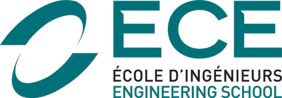
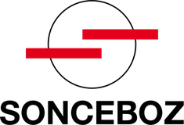
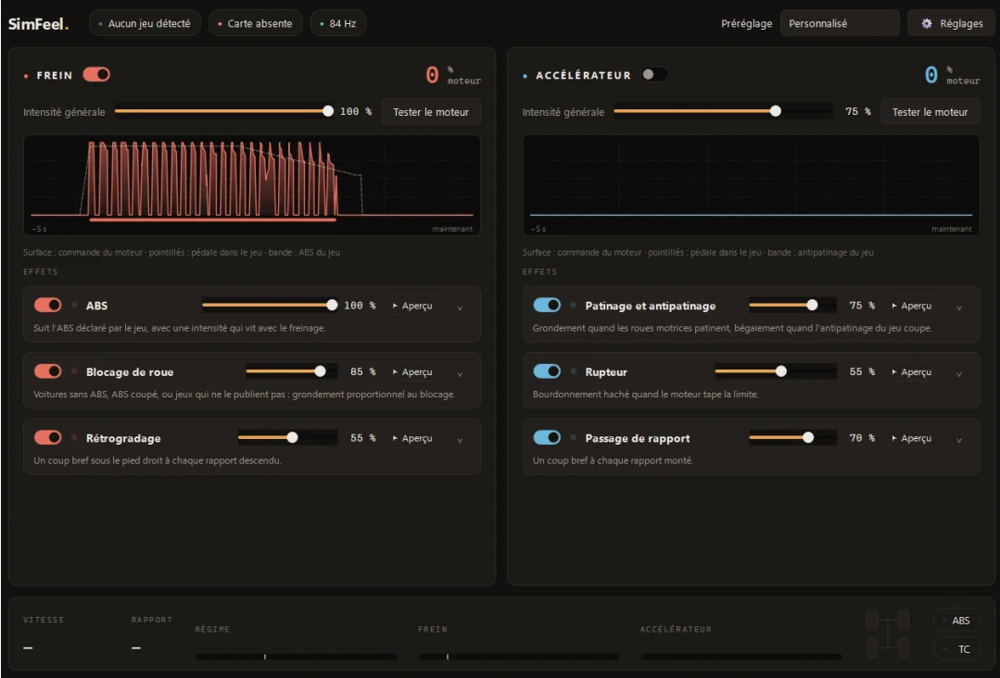

Ingénieur électronique & systèmes embarqués
Julien Carro
Je conçois la carte, puis j'écris le firmware qui tourne dessus.
Diplômé de l'ECE Paris en 2026. Quatre stages industriels en Suisse et en France : électronique de puissance chez Sonceboz, réseau CAN d'une Formula E chez Stellantis Motorsport, refonte d'une carte en fin de vie chez SECAD.
Disponible immédiatement, à la recherche d'un premier emploi. Français, anglais C1, espagnol B2.
Faites glisser la carte pour la tourner- Sonceboz40condensateurs testés en même temps sur 5 cartes de 8 canaux
- Sonceboz7/7cartes conçues, toutes fonctionnelles au premier prototype
- Formula E250+signaux CAN intégrés au volant GEN4
- SECAD2035carte d'un client maintenue en production jusqu'à cette date
Parcours · 2021 → 2026
Cinq ans,
quatre stages
Un BUT pour les bases de l'électronique, un cycle ingénieur pour l'embarqué, et des stages dans des secteurs où une carte n'a pas le droit de lâcher.
- 2021–23FormationIUT Lyon 1 · BUT GEII
Électronique analogique, numérique et de puissance, CEM, automatisme, réseaux. Deux ans, puis admission en cycle ingénieur à l'ECE.
- 2023StageSECAD SA · Saint-Martin-du-Fresne
Premier stage sur une carte de contrôle de dosage agricole menacée par l'obsolescence de ses composants.
- 2023–26Formation

ECE Paris · Diplôme d'ingénieur, majeure Systèmes embarquésGrade master. C/C++ temps réel, bus de communication, FPGA/VHDL, PCB, MBSE. Semestre d'échange à Londres.
- 2024StageSECAD SA · réembauché
Deuxième stage sur la même carte client, jusqu'au prototype validé.
- 2025StageStellantis Motorsport · Formula E
Équipe systèmes, Versailles-Satory : intégration CAN et débogage du volant de la monoplace GEN4.
- 2026Stage de fin d'études

Sonceboz SA · Boncourt, SuisseLaboratoire électronique véhicules commerciaux, environnement IATF 16949 : bancs de qualification de condensateurs.
- Auj.DisponibleDiplômé, à la recherche d'un premier emploi
Ingénieur hardware ou systèmes embarqués.
Expérience · 02 → 08 / 2026
Sonceboz
Un banc qui impose leur courant maximal à 40 condensateurs, sans une ligne de code
Le besoin
Qualifier en interne, sans se fier aux datasheets
Sonceboz voulait ouvrir le multisourcing de ses condensateurs hybrides : 40 références de 12 fabricants, à comparer selon AEC-Q200. Pour l'essai en charge, chaque condensateur doit recevoir son courant d'ondulation maximal, en continu, à 120–130 °C.
- 40 références
- 8 canaux par carte
- sans microcontrôleur
- 1 000 h sans intervention
L'architecture
Plusieurs topologies étudiées, un demi-pont retenu
J'ai étudié plusieurs topologies de puissance avant de retenir un demi-pont piloté par un NE555 et un driver IRS2004S. L'architecture a été validée par un ingénieur senior.
Un transitoire au démarrage, repéré dès la simulation, a été traité avant la fabrication des cartes.
Le dimensionnement
Chaque canal est dimensionné pour sa référence : 1 à 3 inductances en série, résistances de dissipation en parallèle avec derating pour 130 °C. Les pistes 24 V font 5,5 mm selon IPC-2221, soit environ 16 °C d'échauffement à 10 A.
- Altium Designer
- LTspice
- PCB 2 couches
- IPC-2221
Résultat
Sur le projet, j'ai conçu 7 cartes : les 5 cartes de test en charge présentées ici et 2 cartes de vieillissement thermique. Les essais ont tourné plusieurs centaines d'heures en continu, sans incident. J'ai transmis la campagne en cours à l'équipe, avec les bancs, la base de composants et le rapport technique.
La carte en 3D est une reconstitution d'après mon routage et ma nomenclature. Les fichiers de conception appartiennent à Sonceboz.
Expérience · 2025
Stellantis Motorsport
Faire dialoguer le volant GEN4 avec la voiture
En GEN4, toutes les équipes utilisent un volant standard Spark à écran MoTeC C125. Ma mission : y migrer la configuration du volant précédent et l'intégrer au réseau CAN, alors que le temps de simulateur est rare.
250 signaux, 188 canaux
Astuce : cliquez sur un bouton du volant pour changer la page de l'écran.
J'ai regroupé des informations dans des signaux codés sur plusieurs bits, puis je les ai décodés bit à bit dans la configuration de l'écran. Toutes les fonctions utiles ont été conservées.
Au simulateur
Deux pannes bloquantes résolues
Écran noir au démarrage : incohérence d'identifiant de message entre la DBC et la documentation. Je l'ai corrigée côté volant pour ne pas attendre une mise à jour du VCU.
Plusieurs secondes de latence : j'ai affiché la charge CPU et les FPS de l'écran pour l'écarter, puis remonté la cause à une version du logiciel VCU. Le retour à la version précédente a rétabli un temps de réaction normal.
Alarmes
Les alarmes arrivent dans un message multiplexé et défilaient trop vite pour être lues. Une approche temporelle a échoué. J'ai mis en place un compteur de maintien par alarme : l'alarme reste affichée tant que son bit est actif.
Livrables
La migration GEN3 → GEN4 débloquée
J'ai reconstruit la DBC sous Vector CANdb++ et livré le mapping complet des signaux, qui a servi à l'équipe logiciel pour adapter le VCU. J'ai aussi caractérisé les 7 sélecteurs rotatifs non linéaires sous PCAN-View et vérifié la cohérence des signaux au simulateur avec CANalyzer.
- CAN · DBC
- CANalyzer
- PCAN-View
- MoTeC Display Creator
Le volant est modélisé d'après le plan du fabricant, l'écran affiche des données fictives. La monoplace est une Formula E GEN3 Evo, modèle 3D de bluspycrab (Sketchfab, licence CC BY 4.0).
Expérience · 2023 & 2024 · 2 stages
SECAD
Garder une carte en production jusqu'en 2035
Une carte de contrôle de dosage agricole, chez un client, était menacée par l'obsolescence de ses composants.
Migration du microcontrôleur
NXP MCF52254 → LPC5516
J'ai migré le MCU et remplacé 6 autres composants obsolètes ou à long délai, dont le transceiver CAN, le pont complet et le régulateur buck.
Refonte de la carte
4 couches, zéro changement mécanique
J'ai redessiné la carte sous OrCAD Capture / PCB Editor en remplacement direct : même contour, mêmes positions de connecteurs. Le prototype a été fabriqué et validé.
Firmware et validation
J'ai écrit le firmware de communication en C sous FreeRTOS (MCUXpresso), fonctionnel sur le nouveau MCU à la validation du prototype. Ma spécification technique a servi de référence au plan de test. SECAD m'a réembauché pour un deuxième stage sur la même carte.
- MicrocontrôleurNXP MCF52254 (ColdFire)→NXP LPC5516
- Transceiver CANréférence obsolète→remplacé
- Pont completréférence obsolète→remplacé
- Régulateur buckréférence obsolète→remplacé
- 3 autres composantsobsolètes ou à long délai→remplacés
Projets
En dehors
des stages
Commande · MATLAB / Simulink
Guidage de fusée par ailerons actifs
J'ai modélisé la dynamique du vol et les lois de commande, puis je les ai validées en simulation sous MATLAB / Simulink.
L'animation montre le principe : une rafale incline la fusée, les ailerons braquent dans le sens opposé et la ramènent dans l'axe. Le petit graphe suit l'assiette et le braquage.
Animation illustrative, pas les résultats de ma simulation.
Équipe · Formula Student
ARECE, véhicule autonome
Membre de l'équipe ARECE de l'ECE en Formula Student. La voiture est un ADS-DV, la monoplace de la catégorie véhicule autonome : elle roule seule, guidée par ses caméras, son lidar et son calculateur embarqué.
Ma partie
Optimisation de trajectoire
J'ai travaillé sur l'optimisation de trajectoire à partir d'acquisitions vidéo. En épreuve, la piste est délimitée par des cônes bleus à gauche et jaunes à droite ; la ligne rouge montre une trajectoire calculée entre les deux.
ADS-DV modélisé d'après photos. Tracé des cônes et trajectoire illustratifs.
Projet personnel
SimFeel
Sentir l'ABS et le patinage sous le pied, sur un pédalier de simulation
La simulation automobile, ou sim racing, consiste à piloter une voiture dans un jeu de course réaliste, avec un vrai volant et un vrai pédalier posés devant l'écran. C'est un loisir répandu, et un outil d'entraînement dans le sport automobile.
Dans une vraie voiture, le pilote sent sous son pied l'ABS qui se déclenche quand il freine trop fort, ou les roues qui patinent à l'accélération. Sur un pédalier de simulation, il ne sent rien. SimFeel ajoute ces sensations : le jeu signale l'événement, et la pédale vibre.
Le principe
Du jeu à la pédale, en trois étapes
- Le logiciel SimFeel, sur l'ordinateur, lit les données de la voiture dans le jeu : freinage, ABS, patinage, régime moteur, rapport engagé.
- La carte de commande, avec son ESP32, reçoit l'ordre de vibration et alimente le module de la bonne pédale.
- Le module, fixé sous la pédale, fait tourner un petit moteur à balourd : une masse décentrée qui fait vibrer la pédale, comme le vibreur d'un téléphone.
Le produit
Un module vibrant sous chaque pédale
Un boîtier noir fixé sur le bras de la pédale contient un moteur à balourd et sa carte. Un câble 3 fils relie sa prise JST à la carte de commande posée à côté du pédalier.
Vue éclatée
Deux cartes conçues sous KiCad
Le module (Ø 24 mm) porte un composant de commande en SOT-23, une diode et le connecteur JST XH du moteur.
La carte de commande (69 × 55 mm) accueille une carte ESP32 sur deux rangées de 15 broches, un convertisseur DC/DC TRACO TSR-2, un jack d'alimentation et deux sorties JST, une par pédale.
Les deux cartes en 3D sont les vrais exports KiCad. Le boîtier, la pédale, le moteur et la carte ESP32 sont modélisés.
Le logiciel
Les données du jeu traduites en vibrations
Le logiciel SimFeel lit les données du jeu et règle chaque effet séparément.
- Frein : ABS
- blocage de roue
- rétrogradage
- Accélérateur : patinage
- rupteur
- passage de rapport

Capture réelle du logiciel SimFeel.
Compétences · avec la preuve
Ce que je
sais faire
| Domaine | Détail | Où |
|---|---|---|
| Conception hardware | Schéma, routage PCB 2 et 4 couches, choix de composants, DFM / AOI, BOM, IPC-2221, obsolescence et sourcing, rétro-ingénierie | Sonceboz, SECAD |
| Électronique de puissance | Demi-ponts, gate drivers, étages de puissance, dimensionnement, derating et gestion thermique | Sonceboz |
| Test & validation | Conception de bancs, plans de qualification, campagnes d'essai, caractérisation, vieillissement accéléré, rapports | Sonceboz, SECAD |
| Embarqué | C, C++, FreeRTOS, MCU NXP (LPC, ColdFire), programmation bas niveau, contraintes temps réel, FPGA / VHDL | SECAD, ECE |
| Bus & réseaux | CAN (architecture DBC, analyse de trames, messages multiplexés), UART, SPI, I²C | Stellantis, SECAD |
| Systèmes | Intégration de sous-systèmes, validation sur simulateur, débogage et analyse de cause racine, MBSE | Stellantis |
| Normes | IATF 16949, AEC-Q200, IPC-2221 | Sonceboz |
Logiciels
- Altium Designer 365
- OrCAD Capture / PCB Editor
- KiCad
- LTspice
- Vector CANdb++
- CANalyzer
- CANoe
- PCAN-View
- MoTeC Display Creator
- MATLAB / Simulink
- MCUXpresso
- VS Code
Instrumentation
- Oscilloscope
- Sonde de courant
- Pont LCR
- Enceintes de chocs thermiques
Langues
- Françaisnatif
- AnglaisC1 · TOEIC 940
- EspagnolB2
Motivations
Ce qui compte, c'est le résultat livré : un produit fiable, documenté, fabricable.
Ce que mon stage de fin d'études m'a le plus appris
Le métier
Ingénieur hardware dans un secteur à fortes contraintes : automobile, aéronautique, sport automobile. Concevoir des circuits de puissance, router les cartes, puis les voir passer les essais.
L'environnement
Une entreprise où hardware, mécanique, logiciel, production et achats travaillent côte à côte. Cette proximité accélère l'apprentissage et oblige à penser en système dès les premières années.
Le long terme
Encadrer une équipe un jour, mais seulement sur un socle technique solide, acquis au contact des problèmes réels. C'est dans cet ordre que je construis mon parcours.
Contact